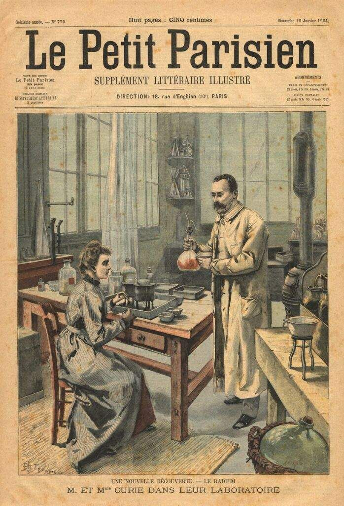
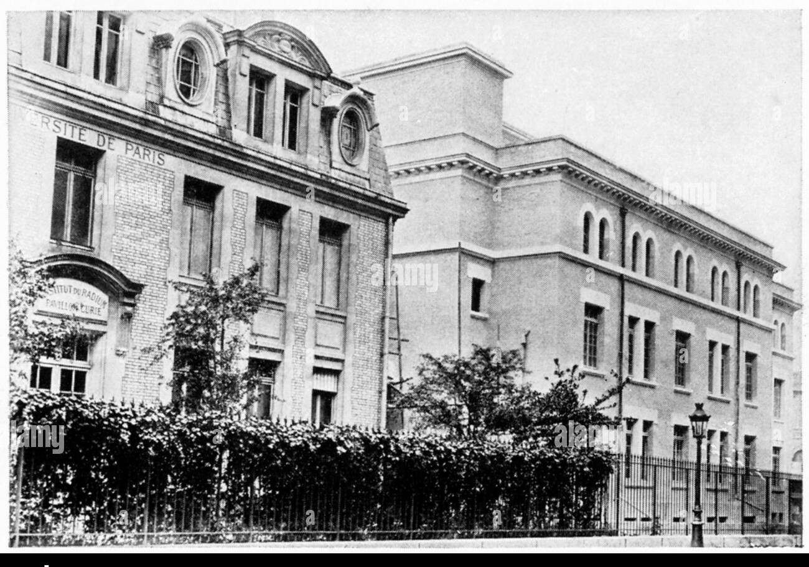

Ideas
Pensamiento o filosofía
 Marie Curie tuvo una filosofía centrada en el avance del conocimiento científico para el beneficio de la humanidad. Creía en el valor de la investigación pura, sacrificando incluso su bienestar personal por sus descubrimientos. Su enfoque en la radiactividad revolucionó la medicina y la ciencia, y consideraba que el conocimiento científico debía compartirse libremente para impulsar la humanidad hacia adelante.
Logros
Contribuciones o Logros
Marie Curie dejó un legado inigualable, incluyendo:
◉ Descubrimiento del radio y el polonio, elementos que cambiaron la química y la física.
◉ Primera mujer en ganar un Premio Nobel y la única persona en obtenerlo en dos disciplinas diferentes (Física y Química).
◉ Desarrollo de aplicaciones médicas de la radiactividad, sentando las bases de la radioterapia para tratar el cáncer.
◉ Creación de laboratorios avanzados y formación de futuras generaciones de científicos.
Bienes Materiales
Más...
 Marie Curie vivió de manera humilde, dedicando la mayoría de sus recursos a su investigación. Durante la Primera Guerra Mundial, creó vehículos equipados con máquinas de rayos X para atender a soldados heridos. Sus bienes materiales más valiosos fueron sus laboratorios y el equipo científico que utilizó para sus descubrimientos, algunos de los cuales siguen siendo considerados tesoros históricos.